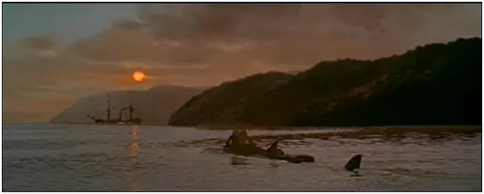
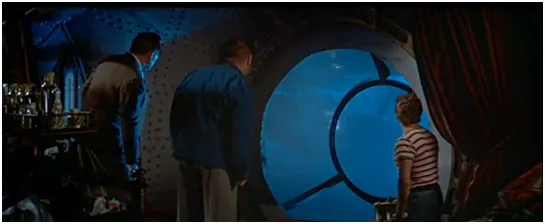

To jest wojna informacyjna, kwestie medyczne to tylko chwilowa taktyka.

Nie idźmy na kurs kolizyjny z Nautilusem
Osobiście nie czytam polskojęzycznych mediów mainstreamu a moje oba profile na FB były długo zablokowane, dlatego aby unikać blokad powoli wyprowadzam się z FB i innych podobnych komunistycznych cenzorów, aby nie uczestniczyć w jazgocie mediowym jaki nam jest serwowany.
Zachęcam, aby w tej wojnie przyjąć taktykę "omijania twierdz". Gdy w trakcie Pierwszej Wojny Światowej Niemcy zbudowali kolosalny czołg nie do zdobycia i rozbicia Francuzi omijali go dużym łukiem. Po kilku dniach czołg zapuścił się głęboko za linię frontu "zwyciężając dzień i noc bez walki" a tam zabrakło mu paliwa na powrót. Gdyby Francuzi nie aresztowali załogi ta zapewne umarłaby z głodu. Komunikaty niejakich Ciemięg, Horbanów czy Simonów mają na celu tylko podwyższanie ciśnienia słuchaczy a ich wartość intelektualna, sprawcza czy prawna jest zerowa. To bełkot stróża, co dzieci z parku chce przegonić, bo hałasują.

Nie idźmy kursem kolizyjnym z Nautilusem, bo potem usłyszymy, że: "byli na kursie i na ścieżce"… Idźmy drogą odbudowywania relacji między ludźmi bez pośrednictwa lewiatana BigTechu. Może być to na początek weekend bez social-mediów, czego Państwu życzę i zapraszam do lektury pozostałych wpisów na tej stronie.
Paweł Klimczewski